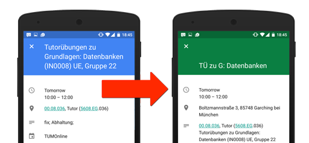

TUM Calendar Proxy

About
Nice and easy proxy to remove some clutter from the TUM online iCal export. E.g.
- Shorten Lesson Names like 'Grundlagen Betriebssysteme und Systemsoftware' → 'GBS'
- Adds locations, which are understood by Google Maps / Google Now
- Replaces 'Tutorübung' with 'TÜ'
- (ToDo: Remove event duplicates due to multiple rooms)
HowTo
- Grab the URL from the TUM Online Calendar (you get it by clicking on 'Veröffentlichen'
- Copy 'n' Paste the query string (everything after the ? sign, e.g. "?pStud=ABCDEF&pToken=XYZ") and append it to this url so it looks like: http://tum.sexy/calendar/?pStud=ABCDEF&pToken=XYZ
- Go to Google Calendar (or similar) and import the resulting url
Contribute
If you want to help out, contribute to the Github Repo, held bei Kordian B.:
https://github.com/kordianbruck/TumCalProxy
Version v1.0 - Changelog